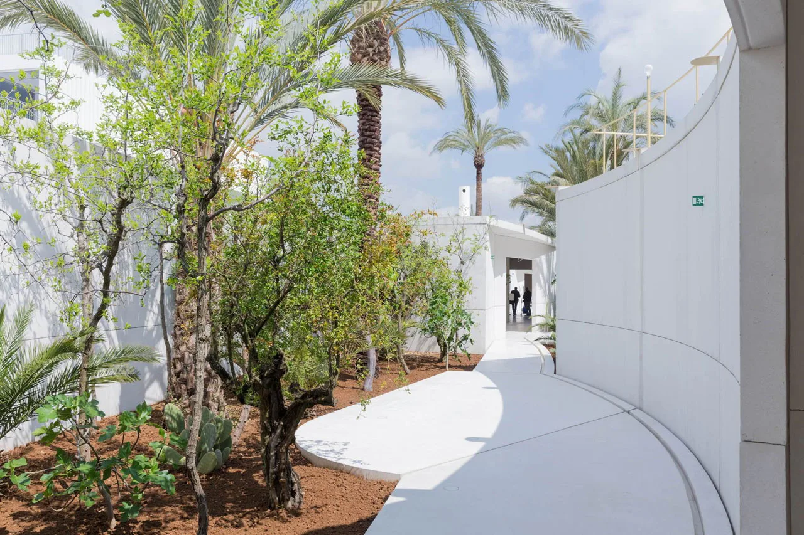
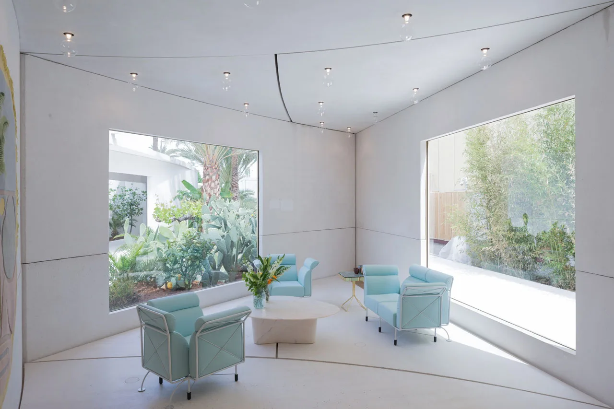
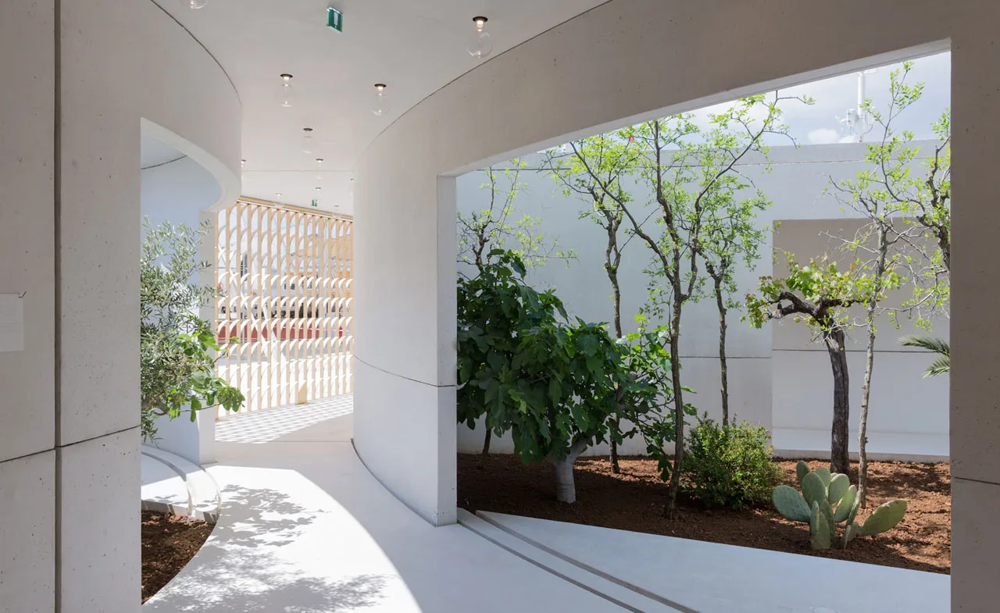
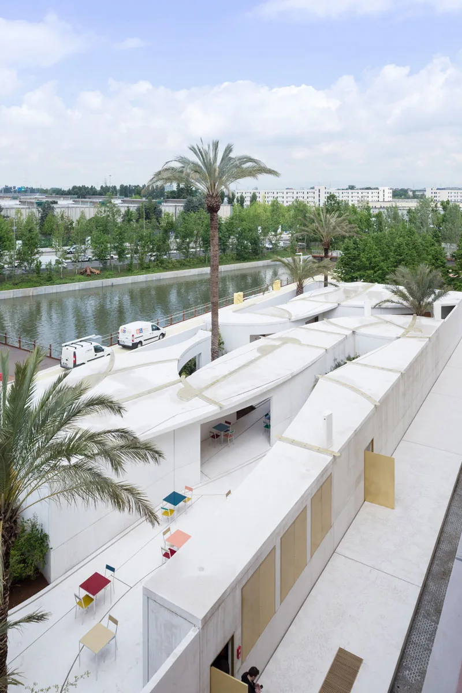
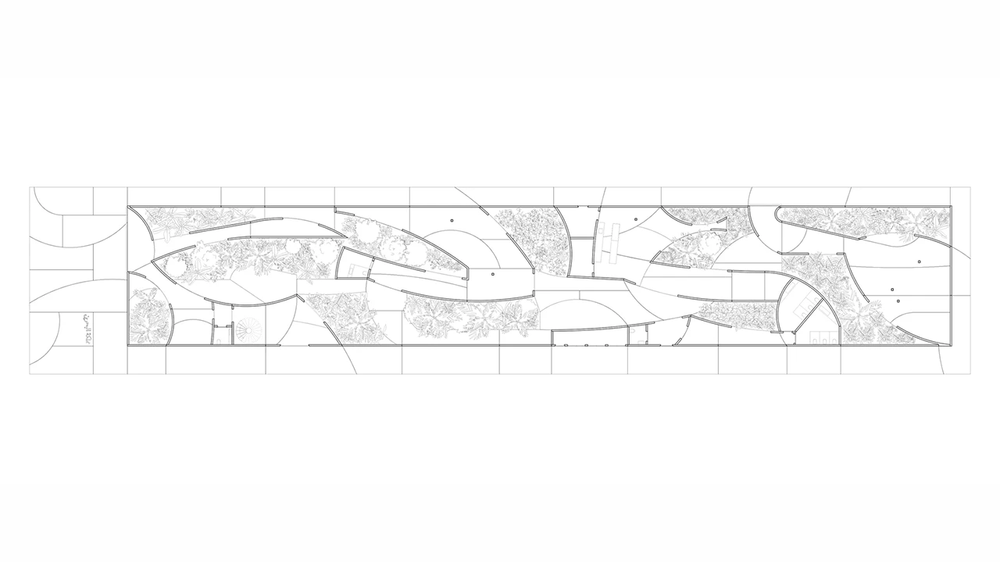
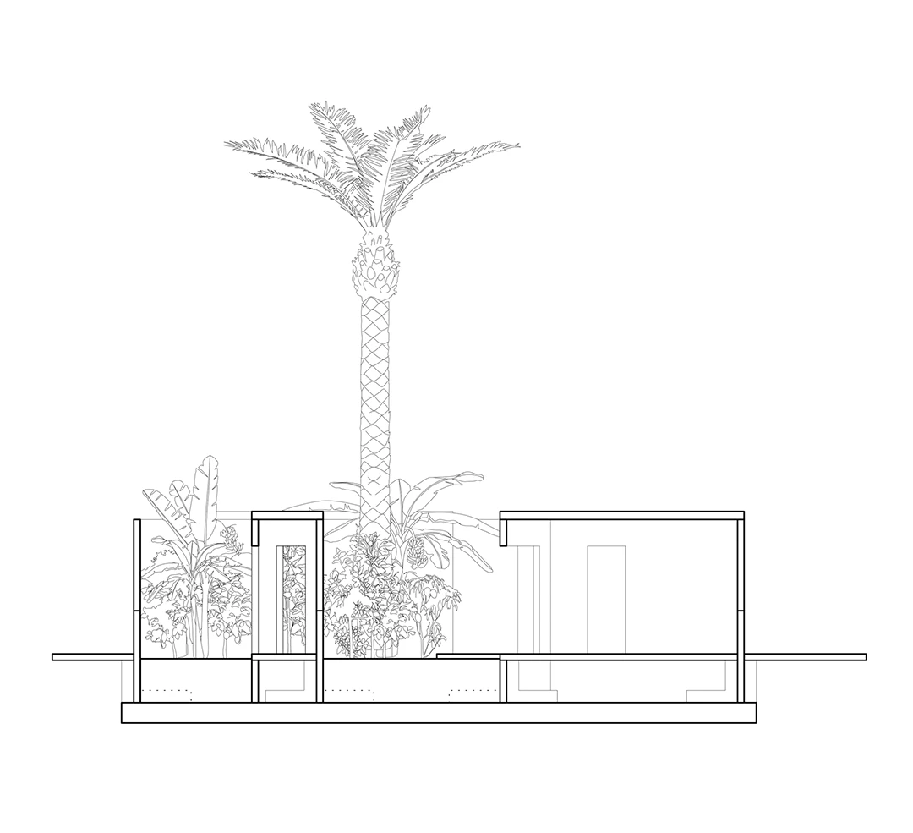
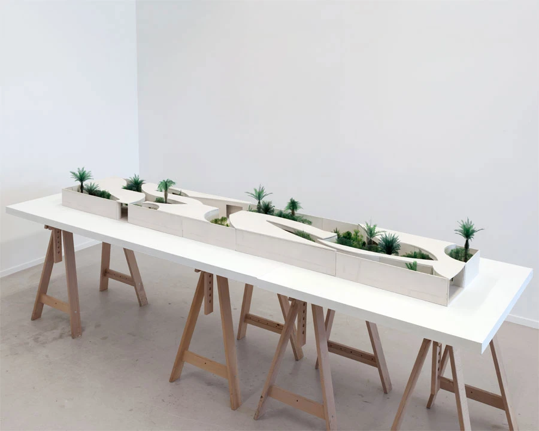
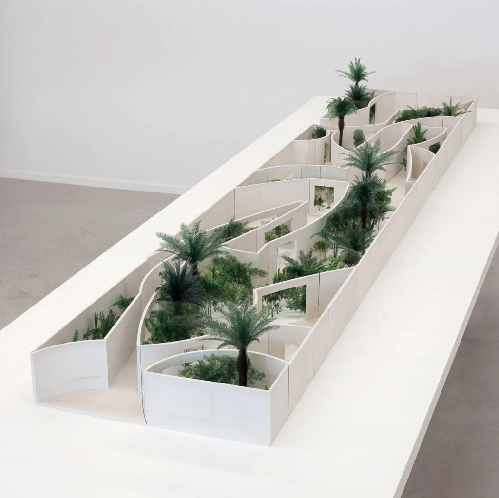

Exhibition pavilion · 2015
Bahrain Pavilion
Studio Anne Holtrop; landscape architect Anouk Vogel
Milan, Italy; later rebuilt in Muharraq, Bahrain
Created for Expo Milano, the pavilion presents agricultural heritage through living gardens, archaeological objects and film. Exhibition rooms, reception and a café frame the planting, making the landscape itself part of the display.
Ten fruit gardens were arranged to change during the exhibition season, linking the visitor experience to growth and time. White prefabricated concrete panels allowed the pavilion to be dismantled; it was subsequently rebuilt in Muharraq in 2018.


Relevant connections
SHOW
Gardens, artefacts and film communicate Bahrain's agrarian heritage to visitors.
Images and drawings / 08













